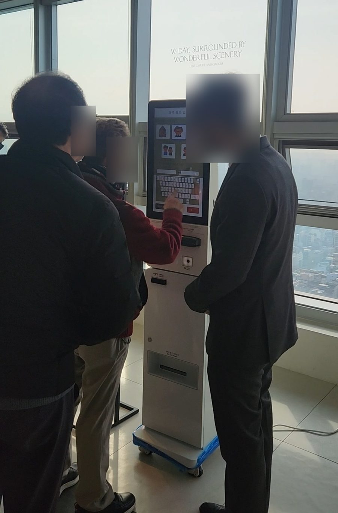
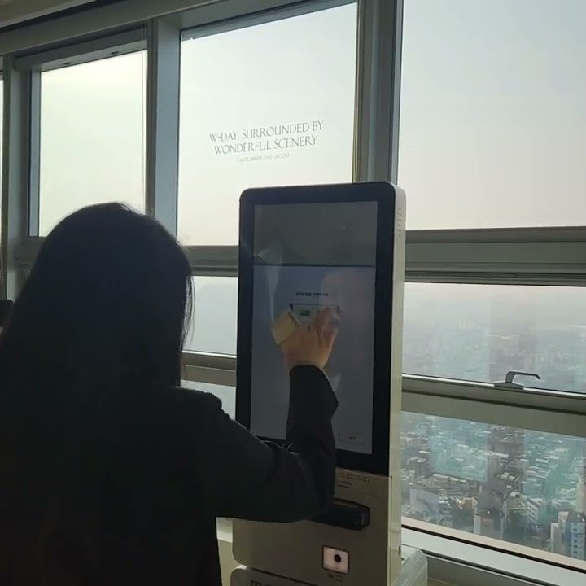
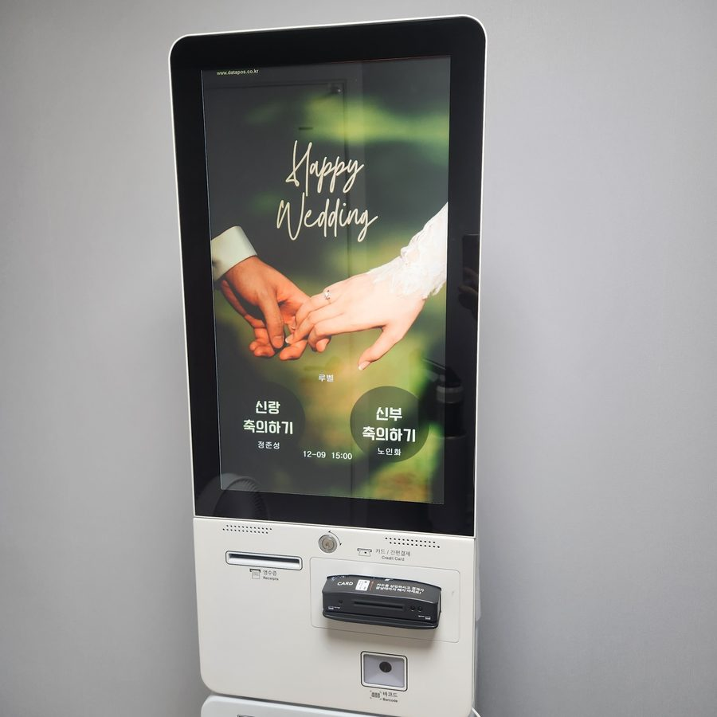
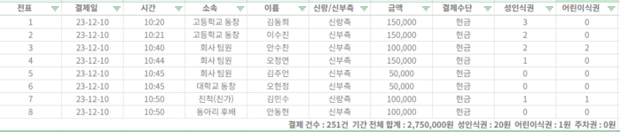
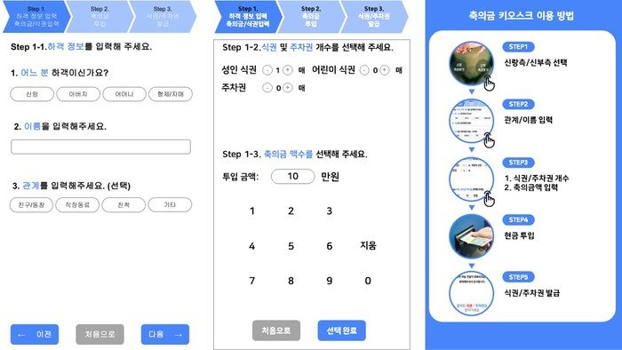
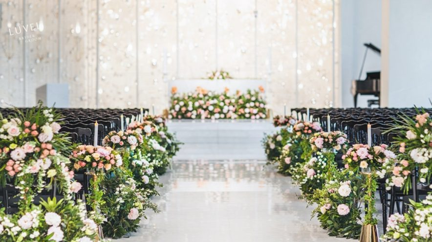
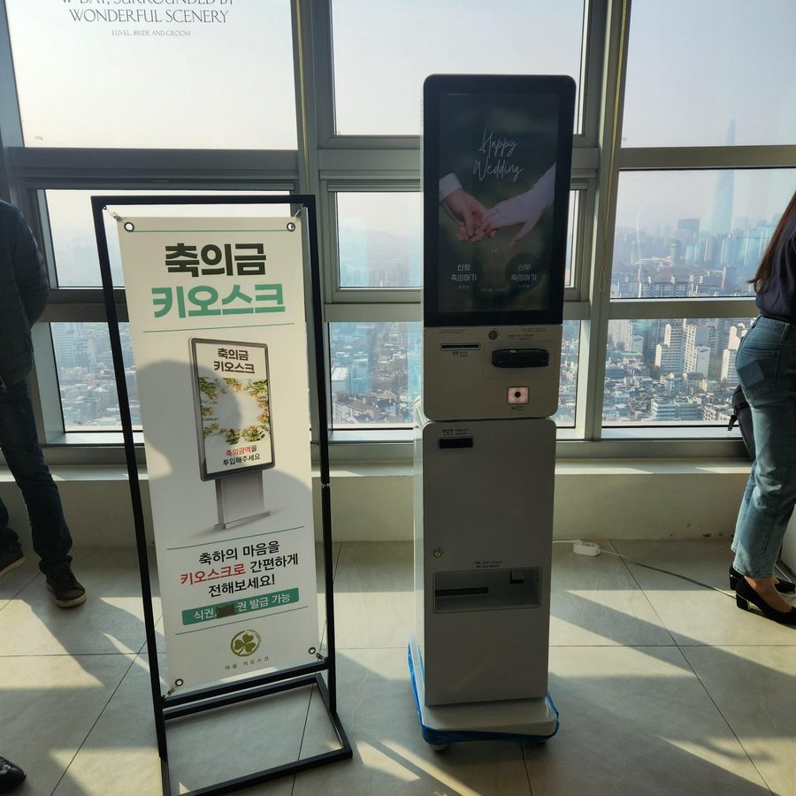
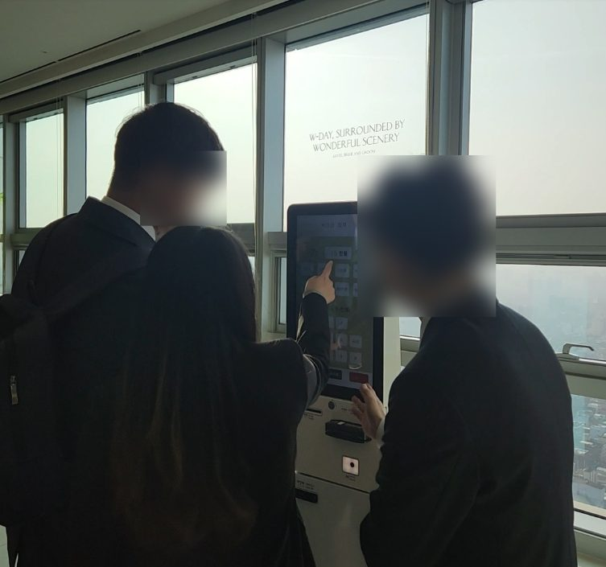

01
축의대, 친척에게 부탁
축의대, 친척에게 부탁
안 해도 됩니다
축의금만 수십 회 받아본 숙련된 직원들이 운영합니다. 친척이나 지인에게 축의대를 부탁하지 않아도 됩니다.
* 축의대 전담 옵션 선택 시 적용

이전에 없던 스마트 결혼식
결혼식 당일, 축의대 앞에서 허둥대지 않아도 됩니다.
‘누구한테 축의대 맡기지?’ 라는 부담과 걱정, 안 하셔도 됩니다.
하객이 축의금을 전하는 과정을 영상으로 확인해 보세요.

영상을 누르면 재생됩니다. (YouTube)
축의금만 수십 회 받아본 숙련된 직원들이 운영합니다. 친척이나 지인에게 축의대를 부탁하지 않아도 됩니다.
* 축의대 전담 옵션 선택 시 적용

미리 현금을 뽑지 않은 하객을 배려하는 스마트한 신랑·신부님이 되어 보세요.
수많은 하객이 현금을 뽑지 못해 수수료를 내고도 찾기 힘든 ATM을 헤맵니다. 마음 키오스크와 함께라면 스마트한 이미지와 함께 하객 편의를 높일 수 있습니다.

키오스크로 처리된 축의금은 누가 얼마 냈는지, 봉투를 열지 않고도 총 금액까지 확인할 수 있습니다.

불편함을 최소화할 수 있도록 직관적이고 이해하기 쉬운 화면으로 구성했습니다.

친척에게 부탁하는 부담감을 덜어드립니다.
카드·계좌이체로 축의가 가능해 하객 편의성이 좋습니다.
마주치는 하객들이 신기한 표정으로 다가왔습니다.
무엇보다도 안내 직원이 상주해서 걱정이 없습니다.
예약 확정 후 예식장 사전 협의부터 당일 설치·운영·정산까지 진행합니다.
상담을 통해 예약일을 확정하고, 예약금을 입금하시면 예약이 확정됩니다.
저희 직원이 예식장에 직접 연락해 키오스크 설치 위치와 운영 시간을 협의합니다.
예식 1시간 전 설치, 약 1시간 20분 운영 후 함께 개봉·정산하고 엑셀 파일을 전달합니다.
추천으로 인한 지인 예약 시, 짝꿍 모두 무제한 1만원 할인
추천해 준 사람과 추천받은 사람 모두에게 적용됩니다.
* 추후 예약 상황에 따라 이벤트가 조기 마감될 수 있습니다.
예약금은 전체 비용의 10%이며, 잔금은 예식 당일 정산합니다.
소규모·미니 웨딩, 혹은 카드 결제 축의 전용 옵션
예약금 3만원
친·인척에게 부탁하지 않아도 되는 옵션
1측 부분 전담 50만원 · 예약금 7만원
현금 없이 계좌이체로만 축의하는 방식
예약금 2만원
안내 직원의 출장 거리에 따라 비용이 달라질 수 있습니다. 짝꿍 이벤트(1인당 1만원, 무제한) 할인은 별도 적용됩니다.
설치부터 정산까지, 실제 결혼식 현장의 모습입니다.



가장 많이 문의하시는 내용을 모았습니다.
네, 괜찮습니다. 키오스크 안내 직원이 A부터 Z까지 도와드립니다.
안내 직원이 상주하며 작동 여부를 지속적으로 체크합니다. 고장 시 즉시 해결하고, 만에 하나 작동이 안 될 경우 안내 직원이 축의금을 받고 식권 발급을 도와드립니다.
네, 그렇습니다. 키오스크 첫 화면에서 하객이 신랑 측·신부 측을 선택한 뒤 축의금을 투입합니다. 따라서 신랑 측·신부 측 모두 1대의 키오스크로 운영할 수 있고, 추후 정산 시 신랑·신부 측 구분도 가능합니다.
네, 가능합니다. 키오스크에서 식권 발급 시 성인·어린이를 구분해 개수를 선택할 수 있습니다.
키오스크 안의 현금은 결혼식 종료 시점에 신랑·신부 혹은 친인척분과 함께 개봉해 정산 확인합니다. 서버에 확인된 현금 결제 금액과 현금 실물 금액이 일치하면 확인 후 전달드립니다.
안내 직원이 소지하고 있는 지폐(1만원권·5만원권)로 교환해 드립니다.
축의금 키오스크는 축의대를 더욱 효율적으로 만들기 위한 보조 수단입니다. 매우 큰 축의 금액(수백만 원)을 납부하거나 친척에게 문의하려는 하객을 위해 기존 축의대도 함께 운영해 주세요.